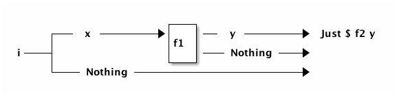
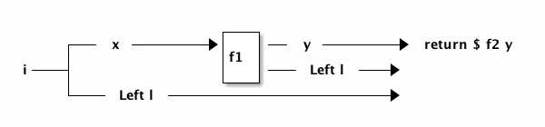
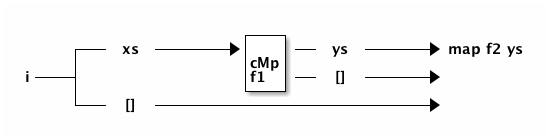
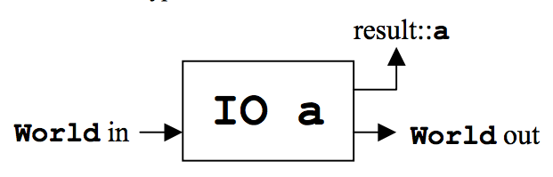
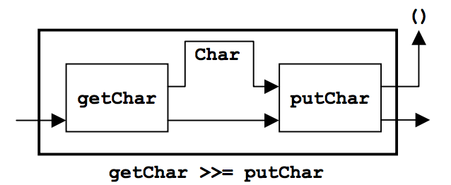

Maybe, Either, list, IO
Maybe
Maybe
- for functions that might not return any results
- e.g., hashmap
- i.e., to turn partial functions into total functions
:i Maybe => data Maybe a = Nothing | Just a
The Nothing and Just parts of the Maybe type definition have nothing to do with monads.
Common pattern : check Maybe results:
maybeExampleNonMonadic :: Maybe t -> (t -> Maybe a) -> (a -> b) -> Maybe b maybeExampleNonMonadic i f1 f2 = case i of Nothing -> Nothing Just x -> case f1 x of Nothing -> Nothing Just y -> Just $ f2 y

toNothing :: t -> Maybe a toNothing _ = Nothing nonMonadicDouble :: Num a => a -> a nonMonadicDouble x = x + x
maybeExampleNonMonadic Nothing Just nonMonadicDouble => Nothing maybeExampleNonMonadic (Just 3) toNothing nonMonadicDouble => Nothing maybeExampleNonMonadic (Just 3) Just nonMonadicDouble => Just 6
Pattern in maybeExampleNonMonadic is common.
Factored into the monadic aspects of Maybe, so example rewritten:
exampleMonadic :: Monad m => m t -> (t -> m a) -> (a -> b) -> m b exampleMonadic i f1 f2 = i >>= f1 >>= return . f2
What remains is the "important" part
- piping "successful" computations from one function to another.
Moved into "monadic plumbing":
- extraction of values from
Just - short-circuiting of
Nothing - sequencing of values
Equivalent do notation:
exampleMonadicDo :: Monad m => m t -> (t -> m a) -> (a -> b) -> m b exampleMonadicDo i f1 f2 = do x <- i y <- f1 x return $ f2 y
In above, return is alias for Just (in this context).
>>= (aka "bind")
Infix Monad >>= function handles sequencing and extraction:
class Monad m where -- | Sequentially compose two actions, passing any value produced -- by the first as an argument to the second. (>>=) :: forall a b. m a -> (a -> m b) -> m b
instance Monad Maybe where (Just x) >>= k = k x Nothing >>= _ = Nothing
return
Monad return function "wraps" a value with an appropriate Monad:
class Monad m where -- | Inject a value into the monadic type. return :: a -> m a
instance Monad Maybe where return = Just
Type-inferencing in the compiler decides which instance of return to use.
Either
Either like Maybe, but additional information is given on "failure" instead
of Nothing:
:i Either => data Either a b = Left a | Right b
Left corresponds to Nothing. Right corresponds to Just.
The Left and Right parts of the Either type definition have nothing to do with monads.
eitherExampleNonMonadic :: Either l t -> (t -> Either l a) -> (a -> b) -> Either l b eitherExampleNonMonadic i f1 f2 = case i of Left l -> Left l Right x -> case f1 x of Left l -> Left l Right y -> return $ f2 y

instance Monad (Either e) where Left l >>= _ = Left l Right r >>= k = k r return = Right
eitherExampleNonMonadic (Left (-1)) toRight nonMonadicDouble => Left (-1) exampleMonadic (Right 3) toLeft nonMonadicDouble => Left 3 exampleMonadicDo (Right 3) toRight nonMonadicDouble => Right 6
Note: exampleMonadic : used with both Either and Maybe.
- because appropriate instances of
>>=andreturnare used based on the type.
[]
Just as Maybe and Either may represent
- none/error (
Nothing,Left) - or one (
Just,Right) results
a list:
:i [] => data [] a = [] | a : [a]
can be used to represent
- none (
[]) - or one or more (
[x, ...]) results.
The [] and a : [a] parts of the [] type definition have nothing to do with monads.
instance Monad [] where m >>= k = foldr ((++) . k) [] m return x = [x]
kapplied to each element of listm- each call to
kreturns zero or more results - results of all calls appended into a single list
listExampleNonMonadic :: [t] -> (t -> [a]) -> (a -> b) -> [b] listExampleNonMonadic i f1 f2 = case i of [] -> [] xs -> case concatMap f1 xs of [] -> [] ys -> map f2 ys

listExampleNonMonadic [ ] toList id => [] exampleMonadic [1,2,3] toEmpty id => [] exampleMonadicDo [1,2,3] toList id => [1,2,3]
recap
The monads above were used for
- sequencing
- "wrapping"/"unwrapping" values to/from monads
- short-circuit further evaluation on
Nothing,Leftand[]
The monads above did not involve side effects.
Notice that the type signatures of all the examples so far are isomorphic:
maybeExampleNonMonadic :: Maybe t -> (t -> Maybe a) -> (a -> b) -> Maybe b exampleMonadic :: Monad m => m t -> (t -> m a) -> (a -> b) -> m b exampleMonadicDo :: Monad m => m t -> (t -> m a) -> (a -> b) -> m b eitherExampleNonMonadic :: Either l t -> (t -> Either l a) -> (a -> b) -> Either l b listExampleNonMonadic :: [ t] -> (t -> [ a]) -> (a -> b) -> [ b]
and follow the shape of >>= :
(>>=) :: forall a b. m a -> (a -> m b) -> m b
IO
IO uses >>= to ensure operations happen in a certain order
- e.g., writes happen before reads when prompting for user input
Those operations also perform side-effects.
The side-effects are part of IO, not part of Monad.
ioExampleMonadic :: FilePath -> String -> IO Bool ioExampleMonadic filename output = openFile filename WriteMode >>= \o -> hPutStrLn o output >>= \_ -> hClose o >>= \_ -> openFile filename ReadMode >>= \i -> hGetLine i >>= \input -> hClose i >>= \_ -> return (input == output) ioExampleMonadicDo :: FilePath -> String -> IO Bool ioExampleMonadicDo filename output = do o <- openFile filename WriteMode hPutStrLn o output hClose o i <- openFile filename ReadMode input <- hGetLine i hClose i return (input == output)


:t ioExampleMonadic "/tmp/BAR.txt" "BAR" => ioExampleMonadic "/tmp/BAR.txt" "BAR" :: IO Bool ioExampleMonadicDo "/tmp/BAR.txt" "BAR" => True
non-monadic tangent: IO is partitioned from pure functions
No way to write a non-monadic IO example (as done for other examples above).
Haskell type system partitions side-effecting IO computations types from pure functions.
Important since it can be argued that most bugs arise from entanglements with state and time.
summary
- monads have nothing to do with side-effects
- monads often used to simulate side-effects
- distinguish "real" side-effects part of the
IOmonad from- the monadic part, the part that does
- sequencing of operations
- extraction/insertion from/to the
IOmonad
- the monadic part, the part that does
- monad "transformers" to combine two or more monads